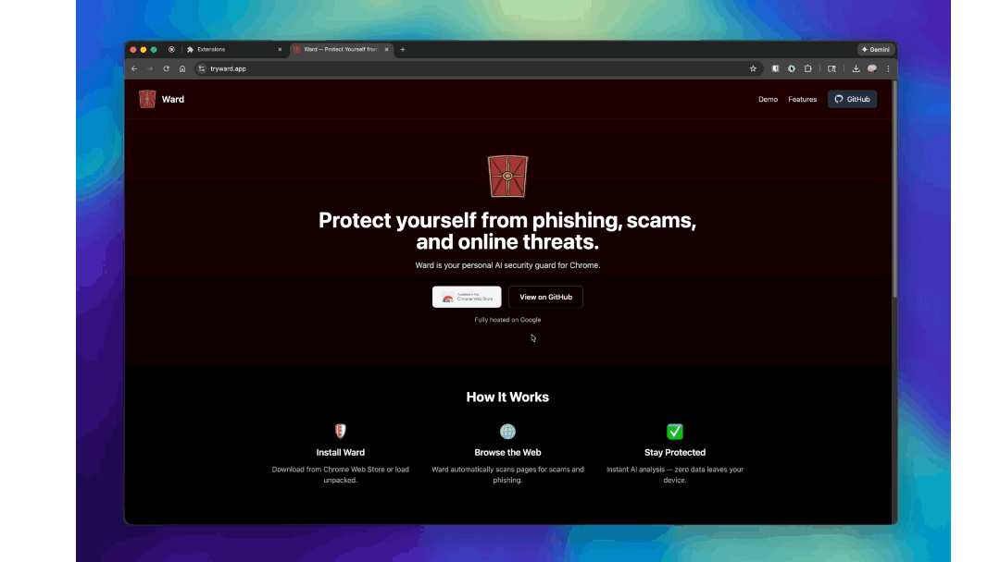

1/3
1
Pin Ward to your toolbar
Click the extensions icon (puzzle piece) in your browser, then pin Ward so you can see protection status.

💡 Tip: Pinned extensions show their icon in your toolbar at all times.